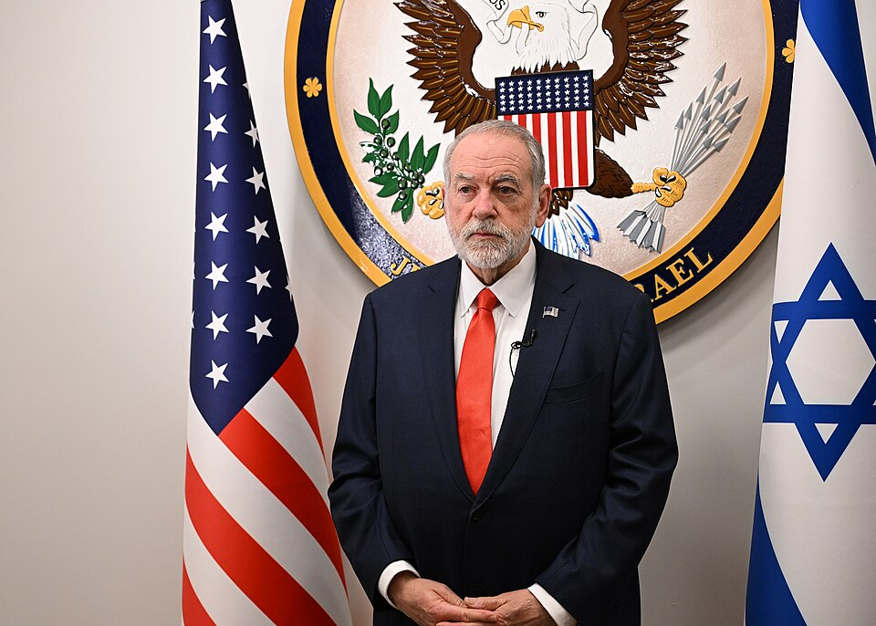
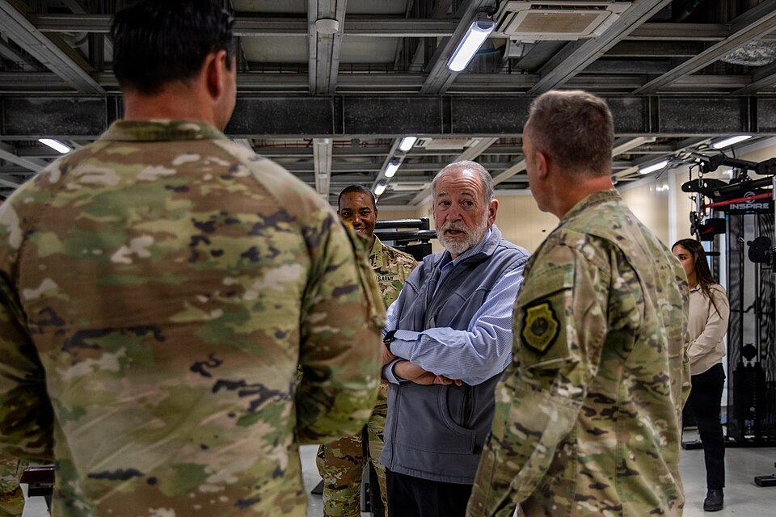

Huckabee came to the post in 2025 as the most open friend the settlement movement has had in the job. He says "Judea and Samaria," he held the first official meeting of a U.S. ambassador with the Yesha Council, and he has said the United States will not tell Israel whether to apply sovereignty. He has also used the word "terror" for attacks by Israelis on Palestinians more often and more bluntly than any earlier U.S. ambassador. He did so after the death of Sayfollah Musallet at Sinjil (July 2025), at Taybeh (July 2025), at Qusra (August 2026), at Turmus Ayya (September 2026) and after the beating of the photographer Heidi Levine at Abu Falah (October 2026).
His interventions fall into a clear pattern. He speaks out hardest when an American citizen is involved. He separates "settlers" from what he calls "unsettlers," a small violent minority, and he praises the Yesha Council's leaders when they condemn them. He says the embassy cannot investigate or prosecute and can only press Israel to do so. The results have been thin. No one has been charged with Musallet's death. The Taybeh "church arson" story did not hold up, and Huckabee then said he had never named a culprit. At Qusra there were arrests, but no indictment had been reported. The settler side is split. Its council leaders have joined him in condemning the worst cases, while the hilltop activists sprayed "Huckabee, greetings from the terrorists" on a burned mosque.
| Date | Place and case | What Huckabee did | What came of it |
|---|---|---|---|
| 11–15 Jul 2025 | Sinjil: Sayfollah Musallet, a U.S. citizen, killed | He phoned the father and posted that he had asked Israel to "aggressively investigate" the "criminal and terrorist act" | Arrests on both sides; no one held for the killing; no indictment reported |
| 19 Jul 2025 | Taybeh: fire beside the Church of St. George | He visited, called the desecration "an act of terror," and demanded prosecution | Police found no damage to the church; he said he had never named a culprit |
| 31 Jul–Aug 2025 | Silwad: Khamis Ayyad, a U.S. citizen, dies | No public comment found | The State Department asked Israel to investigate; no arrests reported |
| 18 Feb 2026 | Mukhmas: Nasrallah Abu Siyam, a U.S. citizen, shot dead | No personal statement found; an embassy spokesman "condemn[ed] this violence" | The army says "anonymous suspects" fired; no arrests reported |
| 13 Aug 2026 | Qusra: settlers' tent at a Palestinian-American's home | He called them "Israeli terrorists" and said the army went in "at our request"; then "Settlers are not the problem… Unsettlers are" | Outposts removed; five suspects arrested in September over a later attack; no indictment reported |
| 1 Sep 2026 | Bazariya: mosque burned, "Huckabee, greetings from the terrorists" sprayed | He answered: "at least you spelled my name right… you admitted who you are" | Eight suspects aged 16–20 arrested |
| 5 Sep 2026 | Turmus Ayya: town hall with Palestinian-Americans | Two hours of meetings; "it's an act of terror"; "we cannot investigate… we cannot adjudicate" | None reported |
| 17 Oct 2026 | Abu Falah: Heidi Levine beaten | "Despicable act of terror carried out by masked cowards"; called for arrest and prosecution | No arrests reported as of 18 Oct, afternoon |
| 18 Oct 2026 | Susya, Hebron Hills: first Judea Conference | Scheduled keynote; signing of a "Judea Declaration" planned | Content not yet reported |
| 17 Oct 2026 | Taybeh: European delegation | No statement found | See the desk's Taybeh coverage |
The Israeli account and what came before. A new outpost and herding ground stood on the hills above Sinjil. The IDF said that "terrorists" threw stones at Israelis near Sinjil and lightly hurt two civilians. It said a "violent friction" followed, with clashes on both sides, arson and damage to Palestinian property. The Binyamin Council said it was "a planned attack by terrorists and rioters against a group of shepherds" whose aim, announced in Palestinian media beforehand, was "removing an outpost." It added that charges planted in advance went off without hurting anyone, and that far-left activists came with the attackers (the council's account; the planted charges are unconfirmed) (Ynet; i24NEWS).
What the evidence showed. Two Palestinians died, Musallet and Mohammed al-Shalabi. Witnesses told CNN that a group of settlers beat Musallet with clubs, and that ambulances could not reach him for at least two hours. The PA did not hand over any autopsy or medical findings, and the bodies were not autopsied, which Ynet says would make the investigation harder. Three people were arrested at first: a reservist suspected of firing during the clash, who was handed to the military police, and two men caught unloading a car nearby. Police said none of the three was suspected in the deaths. One Palestinian was also arrested. Two settlers were later held on suspicion of "rioting" and released to house arrest. His age is given as 20 (the family, Huckabee) and as 23 (Ynet).
Huckabee. On 15 July he phoned the father, Kamel Musallet (Zeteo, by the father's account). He then posted: "I have asked Israel to aggressively investigate the murder of Saif Musallet… There must be accountability for this criminal and terrorist act" (Ynet; NBC News). NBC called it the first time the United States had directly asked Israel to investigate the case. The next day he attended Netanyahu's corruption trial in a show of support (Zeteo).
What came of it. No indictment for the killing has been reported. In March 2026, 31 senators wrote that none of the nine killings of Americans since 2022 had led to a conviction (The Guardian). An August 2026 report says the investigation is still open and no one has been charged (unconfirmed; a weak source).
What came before, and the Israeli account. Fires broke out on 7, 8 and 11 July in the pastures beside the ruins of the 5th-century Church of St. George. Each time, a Jewish farmer whose farm is next to the church complained to the police that his grazing land had been set on fire. In the video circulated as proof of arson, young men from the farm run up the hill in reflective vests with firefighting gear, and the teenager called an "arsonist" is holding a firefighting blower. A teenage shepherd said he saw Palestinians come out of the cemetery and throw things at him (TPS). On 14 July the Greek Orthodox Patriarch, the Latin Patriarch and diplomats of 20 countries visited, and the Greek Orthodox Patriarch said "radical Israelis… intentionally set fire."
Huckabee. He visited on 19 July and was received by Mayor Suleiman Khoury. He said desecrating a holy place "is an act of terror, and it is a crime," and that those responsible must "be prosecuted. Not just reprimanded" (embassy statement; CBS/AFP). On X he wrote of "fires set at ancient church" (Ynet).
What the evidence showed. A special police team found "no damage" to the holy site and called the reports "factually incorrect." The fire was in an open field beside it. Huckabee then wrote: "I have NOT attributed the cause of fire to any person or group as we don't know for sure. The press has" (Ynet; Channel 14). Ynet and Channel 14 called this a retreat. Who started the fires was never established. In August 2026 the army closed Taybeh to Israelis; see the desk's Taybeh coverage.
Khamis Ayyad, 41, an American from Chicago, died of smoke inhalation after trying to put out a fire that, by the Palestinian account, settlers set in Silwad. Israel asked the PA for the autopsy results. Police opened an investigation into the arson, and no arrests were reported. State Department spokeswoman Tammy Bruce said the United States had asked Israel to investigate. Huckabee "has yet to comment" (Times of Israel, 6 August 2025). No later public comment by him was found.
The accounts. A villager said settlers attacked a farmer, villagers stepped in, and armed settlers then fired. The IDF said it used riot-dispersal means after reports of Palestinians throwing stones, that its troops did not fire live rounds, and that "anonymous suspects" fired at Palestinians. Settlers say the shooting was in self-defense against stone-throwing (their claim, reported in a search summary of Kan; I have not read that article). Abu Siyam, 19, born in Philadelphia, died of his wounds. Whether anyone was arrested was not reported (Ynet; The Guardian/AP).
Huckabee. An embassy spokesman said the embassy "condemn[s] this violence." No personal statement by Huckabee was found. A senators' letter of 5 March, addressed to Rubio, Bondi and Huckabee, asked for a U.S.-led investigation (The Guardian).
What came before. On 21 January 2026, settlers set up the Tel Talpiot outpost on Jabal Ein Eina, deep inside Area B, where Israelis may not settle (Arab News; JTA). On 24 July, at Tell, two Israelis and four Palestinians were killed after settlers entered the village (see the desk's Taybeh coverage). On 9 August, settlers pitched a tent at the entrance to three hilltop houses of the Abu Ridi and Hasan families. One of the houses belongs to Loui Ridi of Toledo, Ohio.
The settler account. A source in the settlements told JDN that "there was no siege." He said the structure was a shade shed for Jewish shepherds on summer pasture, and that the family could come and go. He said the house stands on a strategic hill above the Shiloh bloc, as part of a PA effort to take hold of the hill, and that the boulders were placed on the road during a clash with troops over the seizure of a vehicle. Elisha Yered says the homeowner, Qusai Abu Ridi, once took part in an attack on a Jewish shepherd, and that masked men threw stones from the house at Jewish hikers. He also says that about ten shots were fired from the area of the house at Tel Talpiot some three weeks earlier (Yered's claims; unconfirmed). The IDF's own statements confirm that Israelis stayed in a shed beside the house and were removed. They do not say that the family was shut in for five days (JDN).
The IDF's account. The army called the entry of Israelis into Palestinian homes and land around Qusra and Jalud "illegal, reprehensible and unacceptable." It declared a closed military zone and removed the shed. The chief of staff sent another infantry battalion, and soldiers filmed praying with the settlers faced disciplinary action (Ynet).
Huckabee, 13 August. He wrote: "This is another lie. @usembassyjlm has been VERY involved & the IDF & Israel Police have gone at our request to remove the Israeli terrorists doing this." He called it a "horrific act of terror" and said "No excuse for such thuggish behavior." Hours later he wrote: "'Settlers' are not the problem in Judea/Samaria. 'Unsettlers' are. Very small minority… Real settlers like Ysrael Ganz… condemn the actions of the few" (JTA; Arutz 7; Ynet). The State Department would say only that "we condemn criminal violence by any party" (Maariv).
What came of it. The outposts at Qusra and Jalud were taken down and one Israeli was detained. The army then posted soldiers at the hilltop and put up a gate. A month later the families said the army post itself cut them off (Arab News). After a further attack on 29 August, police arrested a 19-year-old from Samaria, who had an airsoft rifle, a knife and tear gas in his car, and an 18-year-old soldier in active service (Jerusalem Post). Reports speak of up to five arrests in all (the fifth is unconfirmed). No indictment had been reported.
A mosque in Bazariya, northwest of Nablus, was set on fire. The graffiti on it included "Huckabee, greetings from the 'terrorists'" and threats against Kan's correspondent Roy Sharon. Police arrested eight West Bank residents aged 16 to 20 and seized three vehicles. The IDF condemned the attack. Tag Meir called it the 11th mosque burned since mid-June (Jerusalem Post). At Turmus Ayya four days later, Huckabee answered: "Well, at least you spelled my name right, and more importantly, you admitted who you are" (embassy transcript, below). No indictment was found.
About 80 percent of Turmus Ayya's residents hold U.S. citizenship, according to the mayor as reported by Reuters (the figure and the population are given differently by AFP and Reuters). Huckabee met residents and the families of Americans killed in the West Bank at the home of Samir Hazmeh, whose windows have been smashed twice. He brought the U.S. security coordinator, "General Salene" (name as spelled in the transcript), and consular staff. Among his words:
(Embassy transcript.) Turmus Ayya lies next to Shiloh, which he has visited (Maariv). Reuters later corrected its story: a woman he met had lost her husband, a U.S. permanent resident, who was killed by Border Police during a settler attack and not by settlers (from the Reuters correction note; the page could not be opened).

The case is set out in the desk's Abu Falah investigation, including the hill's history since March, the stones on both sides, the activists present and the edited clip. On Saturday night Huckabee wrote: "Attacking a female photographer is despicable act of terror carried out by masked cowards. Dishonorable act of senseless violence." He called for investigation, arrest and prosecution "to the fullest extent of the law." Secretary of State Rubio said: "We've asked the Israelis and continue to ask them to crack down on that stuff" (Jerusalem Post). No arrests had been reported as of Saturday night.
No statement by Huckabee on the incident with the European delegation and the French mayor at Taybeh was found. The Prime Minister's Office said there was no "compelling evidence" that settlers attacked the diplomats.
The settler side.
The Palestinian side (claims as stated).
U.S. politics.
Hebrew:
Ynet (Sinjil arrests) ·
Ynet (Huckabee on Musallet) ·
i24NEWS (Binyamin Council account) ·
Ynet (Taybeh police finding) ·
Channel 14 (Taybeh) ·
Ynet (Mukhmas) ·
Ynet (Qusra) ·
Ynet ("unsettlers") ·
Arutz 7 ·
Maariv (State Department) ·
Maariv (Turmus Ayya) ·
JDN (settler account of Qusra) ·
Ynet (Ganz, Alon, Katz)
U.S. government: Embassy statement, Taybeh ·
Embassy transcript, Turmus Ayya
English: Israel Hayom (Shiloh) ·
Times of Israel (sovereignty) ·
Ynet English (Trump on annexation) ·
The Guardian (Carlson interview) ·
NBC News ·
Zeteo ·
TPS ·
CBS/AFP ·
Times of Israel (Ayyad) ·
The Guardian/AP (Abu Siyam) ·
The Guardian (senators) ·
JTA ·
Jerusalem Post (Qusra arrests) ·
Jerusalem Post (Bazariya) ·
Jerusalem Post (Levine)
Arab press: Arab News (Qusra, one month) ·
Al-Quds

.jpg){kind=link}